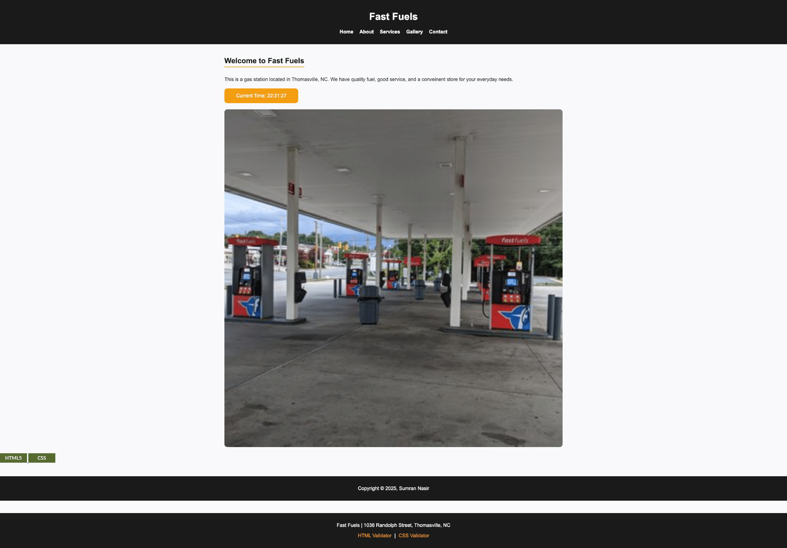

Suman Nasir, Fast Fuels

Visit Fast Fuels!
Evaluation
Checklist & Requirements
- The submitted link leads directly to the home page to be reviewed.
- file and folder names avoid spaces and upper-case letters; if any remain, they should be renamed to follow the course convention.
- The page has strong contrast: dark header/footer with a white content area and readable black text.
- Font size and line spacing make the text easy to read; the welcome paragraph is short and scannable.
- The site appears to use a consistent external CSS file across pages for colors, fonts, and layout.
- CRAP principles:
- Contrast: Black header/footer vs. white main content; orange call-to-action button stands out.
- Repetition: Repeated black bars at top and bottom, consistent button style and typography.
- Alignment: Content is centered within a clean main column; navigation is aligned across the top.
- Proximity: Heading, intro text, time button, and main image are grouped logically.
- The page includes a clear header, main, and footer structure.
- The header brand name “Fast Fuels” is prominent and works well as the site’s h1.
- The main area starts with “Welcome to Fast Fuels” as a heading; this could be adjusted to an h2 labeled “Home” so the page name is clearer while keeping the welcome text as supporting content.
- The brand/tagline (“Fast Fuels | 1036 Randolph Street, Thomasville, NC”) is repeated in the lower footer, reinforcing the location and identity.
- The footer contains an additional menu area and includes HTML and CSS validation links, which is great for meeting course requirements.
- Navigation (Home, About, Services, Gallery, Contact) is simple, clear, and appears consistent with the overall brand.
- The large hero image of the gas station is relevant and gives a real-world sense of the client’s site.
- The “Current Time” button adds a small interactive touch and makes the page feel more dynamic.
Stop / Start / Continue Feedback
- Stop: Avoid using multiple separate footer bars if they can be combined; the copyright bar and address/validator bar could be merged into one footer to reduce visual repetition.
- Start: Consider adding a short tagline or one-sentence summary under the main “Fast Fuels” header on every page to reinforce what makes this gas station unique.
- Continue: Continue using the strong black/white/orange color scheme, clear navigation, and large photography—these choices make the site feel professional and easy to use.
Additional Suggestions
Gallery Page
- Some of the gallery images are not high quality and look a bit pixelated; using higher-resolution photos would make the site feel more polished.
- The gallery images are not all the same size, so when switching between gallery pages the layout jumps and the screen shifts. Making the images a consistent size would create a smoother user experience.
Contact Page
- There is a small spelling/punctuation issue in the text “Location .using google api.” — this could be cleaned up to something like “Location (using Google API).”
- The form currently uses fairly generic or “lazy” placeholders; more descriptive placeholders (for example, “Enter your full name” or “Describe your question”) would make the form feel more user-friendly.
Overall Technical Notes
- The site has two CSS validation warnings. Reviewing those warnings and fixing them would help the code fully meet the course’s validation standards.